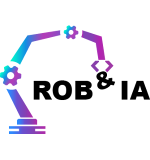

IUT Béziers • Promo 2025-2026
Mon Année
Universitaire
Licence Professionnelle
Robotique & Intelligence Artificielle
← Menu Principal
UE 1 : Concevoir
UE 2 : Déployer
UE 3 : Maintenir
UE 4 : Sécuriser
Titre de l'UE
Sous-titre